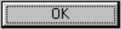
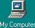
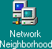
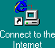
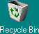

V1ntage Browser 1.0 - [ neocities.org ] - Network Neighborhood

V1ntage Browser 1.0 - [ neocities.org ] - Network Neighborhood
Missing file or folder
The selected file or folder does not exist.





0:00 AM